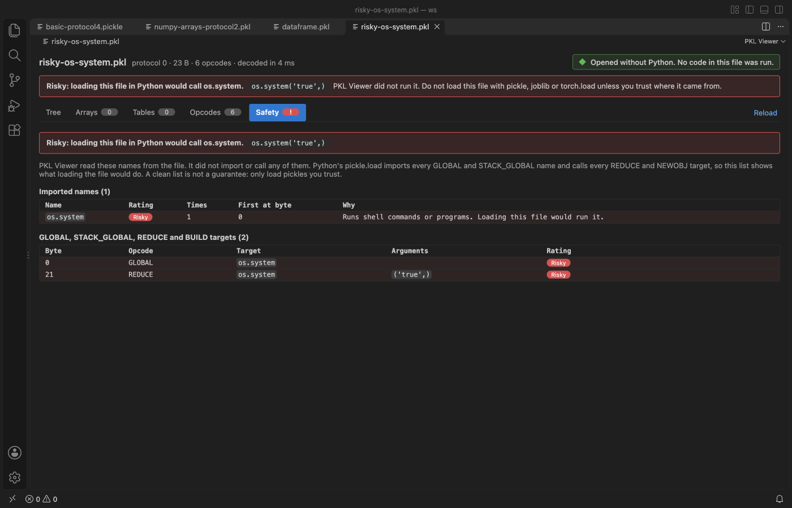

Open files in VS Code and Cursor / Machine learning files
Check if a pickle file is safe before you load it
pickle.load imports every name the file asks for and calls it, so a pickle from the internet can run a shell command. Pickle Viewer & PKL Viewer reads the file in VS Code without Python and without running it, lists every name the file would import or call, and rates each one. A file that would call something like os.system opens on the Safety tab with a red banner. Zovo Pro (USD 19 once) adds a scan of a whole folder of pickles, joblib files and PyTorch checkpoints, with 3 free tries.
Free, MIT license. Extension ID zovo.zovo-pickle-viewer, version 0.2.2. Needs VS Code 1.90.0 or newer.
Also free from Zovo: NPZ & NPY Viewer, PyTorch & Safetensors, VS Code Marketplace · Open VSX (Cursor, Windsurf).

Steps in VS Code
- Install Pickle Viewer & PKL Viewer from the Marketplace, or press Ctrl+P (Cmd+P on macOS) and run
ext install zovo.zovo-pickle-viewer. - Click the
.pklor.picklefile in the Explorer. For a.pfile, right-click it and pick "Open in PKL Viewer". - If the file would call something risky, it opens on the Safety tab with a red banner that names the call and its arguments, for example
os.system('true',). - Read the Safety tab. Every GLOBAL, STACK_GLOBAL, REDUCE and BUILD target is listed with the byte where it appears. Names are rated Risky, Check or Needs package, and plain data types are marked as data.
- Look at the Needs package entries. They are classes from other packages, such as your own code. They are not flagged as risky, but Python would import them.
- Open the Opcodes tab for a listing like
pickletools.disif you want to see each step.
Where Zovo Pro saves time
Opening pickles and the Tree, Arrays, Tables, Opcodes and Safety tabs are free. The safety check always covers the whole file, even when the tree shows only the first items. The reader never imports or calls anything, and the viewer makes no network calls.
A downloaded model folder or a shared drive can hold dozens of pickles and checkpoints. Scan a Folder for Unsafe Pickles and PyTorch Files checks every .pkl, .pickle, .p, .joblib and .dill file, and the pickle inside PyTorch .pt, .pth, .ckpt and .bin checkpoints, in the folder and its subfolders. It saves one Markdown report with the risky files first, each name Python would import or call, and its byte offset. Nothing is loaded or run. The other Pro tool exports a pickle to JSON or CSV with all rows.
With Scan a Folder for Unsafe Pickles and PyTorch Files (Zovo Pro)
- Right-click a folder in the Explorer and pick "Zovo Pro: Scan a folder for unsafe pickles", or run "PKL Viewer: Scan a Folder for Unsafe Pickles and PyTorch Files (Zovo Pro)" from the Command Palette and pick the folder.
- A notification shows each file as it is checked. Cancel stops the scan.
- Save the report. It is named
pickle-safety-report.mdby default and opens when it is saved.
Scan a Folder for Unsafe Pickles and PyTorch Files works 3 times on your computer before it asks for a license, and a try counts only when you get a result. Opening a file shows no popup and no countdown.
Zovo Pro costs USD 19 once. It is not a subscription, and it turns on the Pro tools in every Zovo extension, not only Pickle Viewer & PKL Viewer. After a card payment (Stripe) your license key shows on the next page. In VS Code, run "Zovo Pro: Enter Zovo Pro license key" from the Command Palette and paste it. The key is checked on your computer, with no network call. With GitHub Sponsors, pick the "$19 one time" tier, then run "Zovo Pro: I already paid: unlock with GitHub Sponsors" and sign in with the same GitHub account. With PayPal, send USD 19 with "Zovo Pro" in the note and the key comes by email within a day.
A team of 5: USD 59 once, by card or by PayPal. Every rule and every Pro tool is on the Zovo Pro page.
Steps in Cursor, Windsurf or VSCodium
- Open the Extensions view with Ctrl+Shift+X (Cmd+Shift+X on macOS).
- Search for
zovo.zovo-pickle-viewerand click Install. Cursor, Windsurf and VSCodium install from Open VSX, where it is published aszovo/zovo-pickle-viewer. - If your editor has no gallery, download the .vsix from the Open VSX page and run "Extensions: Install from VSIX...".
- Then use it the same way as in VS Code.
What Pickle Viewer & PKL Viewer handles
- Pickle protocols 0 to 5, including Python 2 pickles.
- NumPy arrays and pandas DataFrames inside a pickle, shown as data.
- In the folder scan, joblib files and PyTorch ZIP checkpoints, read without loading them.
What it does not do
- A clean list is not a promise that a file is safe. Only load pickles you trust.
- Files over 512 MB are not opened unless you raise
pickleViewer.maxFileMB(up to 2048). The folder scan lists such files as skipped. - In the viewer, joblib files with compressed arrays and PyTorch
.ptZIP files do not open. Use Tensor Viewer for.ptfiles. - The folder scan skips folders such as node_modules, .git and virtual environments, and checks at most 5,000 files.
Other options
- picklescan. A free command-line scanner that looks for dangerous imports in pickle and PyTorch files. Needs Python.
- fickling. A free Python tool from Trail of Bits that decompiles a pickle and checks it for unsafe calls.
- pickletools.
python -m pickletools file.pkllists the opcodes without loading the objects. You read the imports yourself.
Install counts and Open VSX status were checked on 13 November 2026. Descriptions in quotes are the extensions' own.
Questions
Why is loading a pickle dangerous?
A pickle can name any Python function and ask for it to be called with arguments. pickle.load, joblib.load and torch.load without weights_only=True do that, so a crafted file can run commands.
Does opening the file in the viewer run it?
No. The reader turns the opcodes into data and never imports or calls anything.
What does Needs package mean?
The file uses a class from a package outside the standard data types, such as your own code. It is not flagged as risky, but Python would import that package when it loads the file.
Does it work in Cursor or Windsurf?
Yes. Cursor, Windsurf and VSCodium install extensions from Open VSX. Search for the extension in their Extensions view and install it there.
More about Pickle Viewer & PKL Viewer
Read the Pickle Viewer & PKL Viewer page for every feature and setting, or the source code on GitHub.
Related guides
- NPZ & NPY Viewer, PyTorch & Safetensors on the VS Code Marketplace (also on Open VSX). Shows arrays, shapes and values from .npy, .npz, .pth, GGUF and safetensors files.
- Open a .pkl pickle file in VS Code without running it
- Pickle to JSON with no Python
- View .npy and .npz NumPy files in VS Code
- A safetensors viewer for VS Code
Support this work
If this extension saves you time, you can support the work on GitHub Sponsors. Monthly tiers start at $5, and one-time tiers start at $15. Sponsorship is optional, and the tool works the same without it.
Need your format supported?
Open a format request with a sample file, and I reply there whether it can be done. For USD 299 once, through this GitHub Sponsors tier, I add your file format or a missing feature to this extension, with tests, within 7 days.